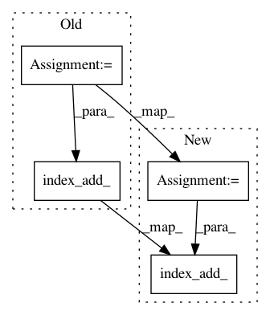

d4255c9c4d04cf7f09881b272535cfdc155957a7,agent.py,Agent,learn,#Agent#Any#,51
Before Change
dns = self.support.expand_as(pns) * pns // Distribution d_t+n = (z, p(s_t+n, ·; θonline))
argmax_indices_ns = dns.sum(2).max(1)[1] // Perform argmax action selection using online network: argmax_a[(z, p(s_t+n, a; θonline))]
self.target_net.reset_noise() // Sample new target net noise
pns = self.target_net(next_states).data // Probabilities p(s_t+n, ·; θtarget)
pns_a = pns[range(self.batch_size), argmax_indices_ns] // Double-Q probabilities p(s_t+n, argmax_a[(z, p(s_t+n, a; θonline))]; θtarget)
// Compute Tz (Bellman operator T applied to z)
Tz = returns.unsqueeze(1) + nonterminals * (self.discount ** self.n) * self.support.unsqueeze(0) // Tz = R^n + (γ^n)z (accounting for terminal states)
Tz = Tz.clamp(min=self.Vmin, max=self.Vmax) // Clamp between supported values
// Compute L2 projection of Tz onto fixed support z
b = (Tz - self.Vmin) / self.delta_z // b = (Tz - Vmin) / Δz
l, u = b.floor().long(), b.ceil().long()
// Fix disappearing probability mass when l = b = u (b is int)
l[(u > 0) * (l == u)] -= 1
u[(l < (self.atoms - 1)) * (l == u)] += 1
// Distribute probability of Tz
m = states.data.new(self.batch_size, self.atoms).zero_()
offset = torch.linspace(0, ((self.batch_size - 1) * self.atoms), self.batch_size).unsqueeze(1).expand(self.batch_size, self.atoms).type_as(actions)
m.view(-1).index_add_(0, (l + offset).view(-1), (pns_a * (u.float() - b)).view(-1)) // m_l = m_l + p(s_t+n, a*)(u - b)
m.view(-1).index_add_(0, (u + offset).view(-1), (pns_a * (b - l.float())).view(-1)) // m_u = m_u + p(s_t+n, a*)(b - l)
ps_a = ps_a.clamp(min=1e-3) // Clamp for numerical stability in log
loss = -torch.sum(Variable(m) * ps_a.log(), 1) // Cross-entropy loss (minimises DKL(m||p(s_t, a_t)))
After Change
dns = self.support.expand_as(pns) * pns // Distribution d_t+n = (z, p(s_t+n, ·; θonline))
argmax_indices_ns = dns.sum(2).max(1)[1] // Perform argmax action selection using online network: argmax_a[(z, p(s_t+n, a; θonline))]
self.target_net.reset_noise() // Sample new target net noise
pns = self.target_net(next_states) // Probabilities p(s_t+n, ·; θtarget)
pns_a = pns[range(self.batch_size), argmax_indices_ns] // Double-Q probabilities p(s_t+n, argmax_a[(z, p(s_t+n, a; θonline))]; θtarget)
// Compute Tz (Bellman operator T applied to z)
Tz = returns.unsqueeze(1) + nonterminals * (self.discount ** self.n) * self.support.unsqueeze(0) // Tz = R^n + (γ^n)z (accounting for terminal states)
Tz = Tz.clamp(min=self.Vmin, max=self.Vmax) // Clamp between supported values
// Compute L2 projection of Tz onto fixed support z
b = (Tz - self.Vmin) / self.delta_z // b = (Tz - Vmin) / Δz
l, u = b.floor().long(), b.ceil().long()
// Fix disappearing probability mass when l = b = u (b is int)
l[(u > 0) * (l == u)] -= 1
u[(l < (self.atoms - 1)) * (l == u)] += 1
// Distribute probability of Tz
m = states.new_zeros(self.batch_size, self.atoms)
offset = torch.linspace(0, ((self.batch_size - 1) * self.atoms), self.batch_size).unsqueeze(1).expand(self.batch_size, self.atoms).to(actions)
m.view(-1).index_add_(0, (l + offset).view(-1), (pns_a * (u.float() - b)).view(-1)) // m_l = m_l + p(s_t+n, a*)(u - b)
m.view(-1).index_add_(0, (u + offset).view(-1), (pns_a * (b - l.float())).view(-1)) // m_u = m_u + p(s_t+n, a*)(b - l)
ps_a = ps_a.clamp(min=1e-3) // Clamp for numerical stability in log
loss = -torch.sum(m * ps_a.log(), 1) // Cross-entropy loss (minimises DKL(m||p(s_t, a_t)))
In pattern: SUPERPATTERN
Frequency: 3
Non-data size: 4
Instances
Project Name: Kaixhin/Rainbow
Commit Name: d4255c9c4d04cf7f09881b272535cfdc155957a7
Time: 2018-04-28
Author: design@kaixhin.com
File Name: agent.py
Class Name: Agent
Method Name: learn
Project Name: OpenNMT/OpenNMT-py
Commit Name: 26a7e209d9895000b638d2b4acacdd6c25269369
Time: 2018-02-02
Author: s.gehrmann@outlook.com
File Name: onmt/io/TextDataset.py
Class Name: TextDataset
Method Name: collapse_copy_scores
Project Name: mariogeiger/se3cnn
Commit Name: 84727d59e2d228aca53f501cf077fc70d6254afe
Time: 2019-09-25
Author: lapchevsky.k@gmail.com
File Name: se3cnn/point/operations.py
Class Name: PeriodicConvolution
Method Name: forward